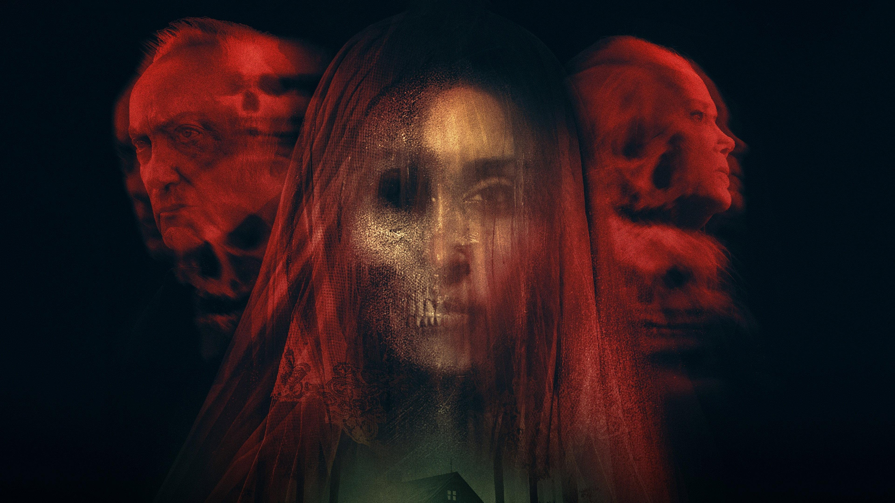
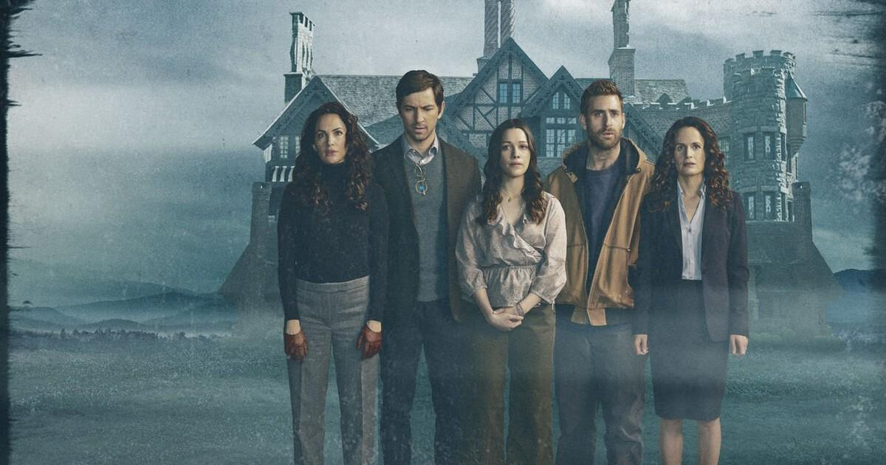
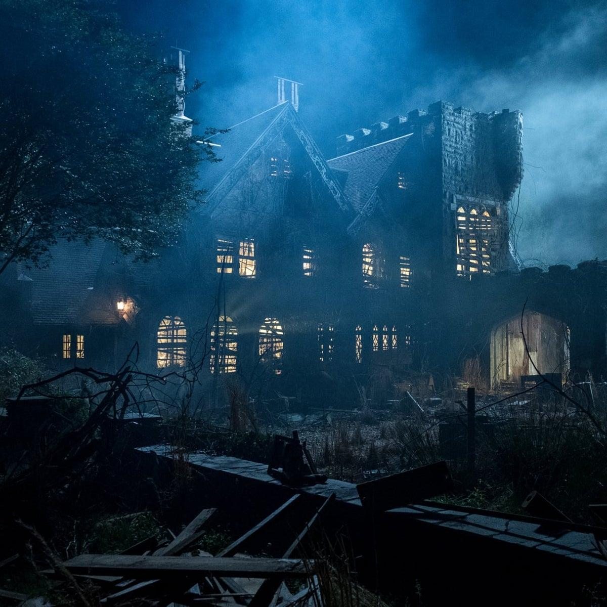
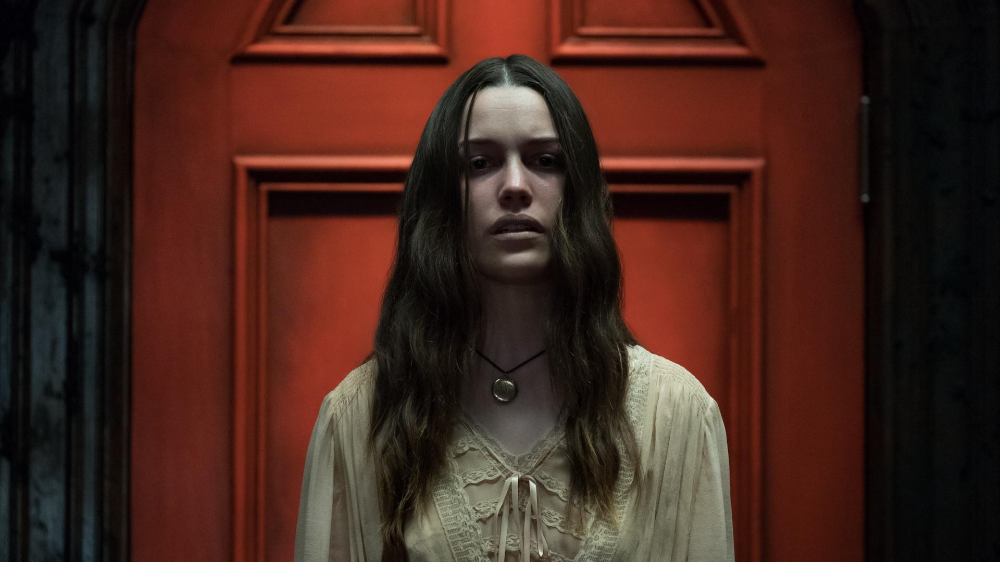
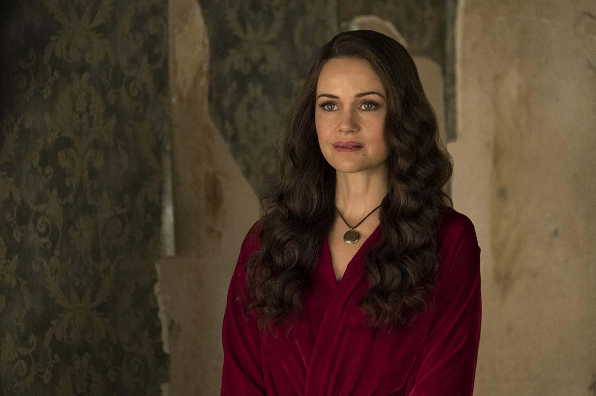
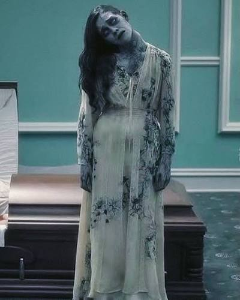
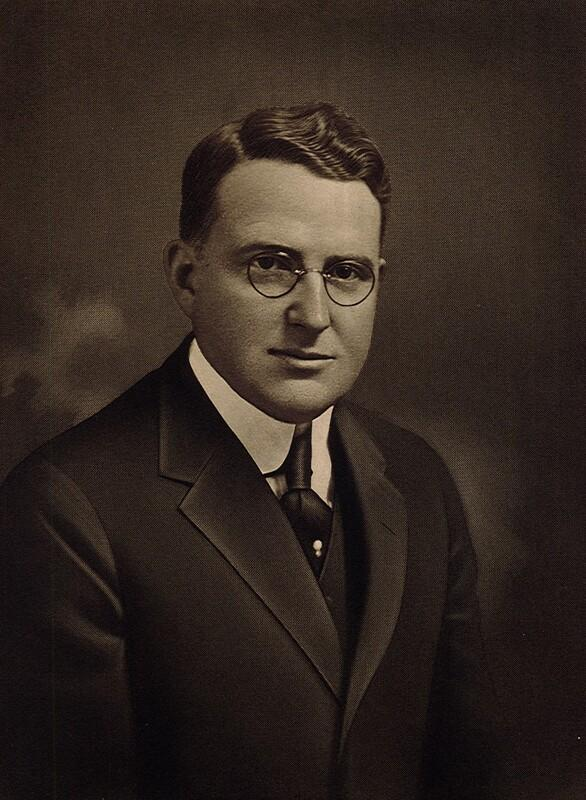
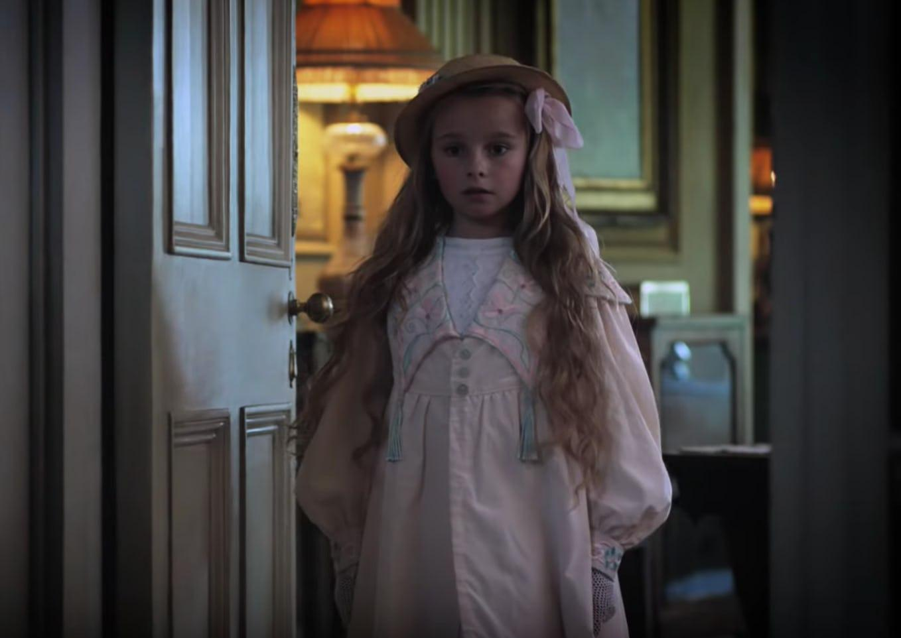
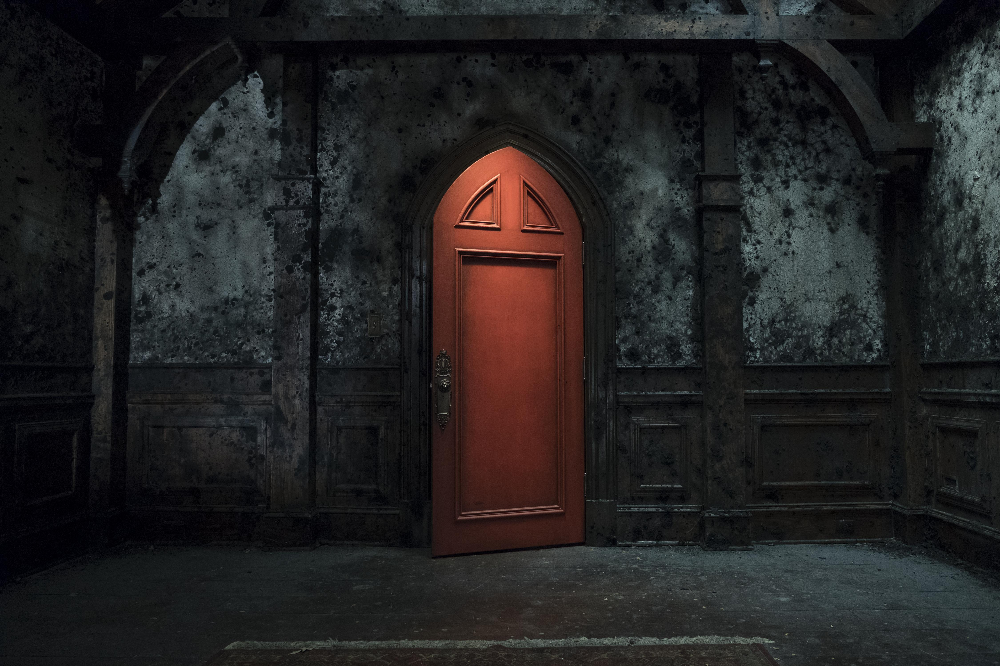

Il cuore della storia
Gli investigatori non stanno entrando in una casa infestata. Stanno tornando nel luogo in cui una parte di loro non ha mai smesso di vivere.
Hill House custodisce tre verità intrecciate: gli esperimenti sulla coscienza di Elias Harrow, il sacrificio della famiglia Craine e la natura della Madre Vuota, che ha imparato che amare significa non lasciare andare.
L'esperimento di Elias Harrow
Il dottor Elias Harrow acquistò la villa per studiare la persistenza della coscienza dopo la morte. Usò bambini come soggetti principali e le loro madri biologiche come sorgenti di emozioni, servendosi del Bleed per registrare e conservare le impronte mentali.
Quando una delle madri morì naturalmente, la sua voce e i suoi ricordi continuarono a manifestarsi. Harrow credette di aver trovato l'immortalità. In realtà aveva risvegliato un'entità già presente sotto Hill House.
Le altre madri, iniziarono a morire, uccise da Harrow convinto che quello fosse il modo per raggiungere l'immortalità intanto che l'entità assorbiva le loro coscienze e l'amore che esse avevano per i loro figli, trasformandolo in un desiderio di proteggere e trattenerli bambini per sempre.
Una di loro tentò di libellarsi al giogo di Harrow, ma nel tentativo di ucciderlo la piccola Violet Harrow, figlia del dottore, morì.
La donna, ormai annichilita, venne data in pasto all'entità da Harrow.
Questo però raffrorzò ancora di più l'entità che, riuscì per la prima volta a manifestarsi in forma corporea.
Tutto questo allertò la Candela Obscura che inviò una spedizione di investigatori, la famiglia Craine, per indagare sull'anomalia.
Harrow, cosciente di aver creato liberato un mostro, ma troppo ossessionato dall'idea della vita eterna, decise di murarsi vivo in cantina con diario, cartelle cliniche e risultati, desiderando anch'egli sopravvivere per sempre e non dover condividere le sue scoperte con nessuno.
La Madre Vuota

Prima degli esperimenti, la Madre Vuota era una presenza del Bleed capace di trattenere ciò che moriva nella villa. Le donne assorbite le insegnarono il linguaggio dell'affetto, della paura e della protezione. L'entità scambiò il timore di perdere un figlio con il diritto di trattenerlo per sempre.
Le tre leggi
I. La Madre non inventa ricordi autentici: li distorce, combina o nasconde.
II. Le coscienze assorbite rimangono presenti, ma sommerse dalla volontà collettiva.
III. Un gesto d'amore che accetta la separazione può restituire temporaneamente a una madre la propria identità.
Le donne contribuirono involontariamente alla prigione: morendo desiderarono disperatamente rimanere vicine ai figli. La Madre interpretò quel desiderio come un ordine senza fine.
Il sacrificio della famiglia Craine

La Candela Obscura inviò la famiglia Craine a indagare sull'anomalia. La spedizione scoprì che la Stanza Rossa era il fulcro della presenza e che l'entità stava estendendo la propria influenza oltre la villa.
Per contenere la Madre, i Craine sacrificarono la propria libertà: alcune coscienze sono tuttora impegnate nel sigillo. Olivia è morta e assorbita; la Madre usa il suo volto come maschera. Nelly sopravvive come fantasma frammentato.
| Presenza | Condizione |
|---|---|
| Olivia Craine | Assorbita; volto della Madre |
| Nelly Craine | Fantasma con ricordi incompleti |
| Altri Craine | Ancore del contenimento nella Stanza Rossa |
| Madre Vuota | Vuole sostituire i guardiani con gli investigatori |
Prima che la Candela potesse rimuovere i Craine, la Madre li trattenne nella Stanza Rossa. La loro presenza è l'unico sigillo che impedisce alla Madre di diffondersi oltre Hill House.
Ai bambini sopravvissuti agli esperimenti, la Candela ha fornito una nuova identità e li ha inviati a vivere nel mondo esterno, cancellando ogni ricordo legato alla loro vita fino ad allora sia fisico che emotivo.
Tre scomparsi in dieci giorni
La Candela manda gli investigatori a Hill House per indagare dopo aver ricevuto diverse lettere:
- Dalla moglie del guardaboschi Thomas Reed che chiedeva aiuto per cercare il marito scomparso dopo aver ricevuto l'incarico di sistemare dei giardini vicino una villa abbandonata.
- Dalla collega dell'infermiera Margaret Ellis che ne segnalava la scomparsa dopo una richiesta di visita a domicilio per una bambina con sintomi di un malanno di stagione.
- Dalla famiglia di Arthur Bell, postino, che ne segnalava la scomparsa dopo essere stato mandato a ritirare un pacco presso Hill House.
- Una lettera firmata V.H., chiedeva alla Candela aiuto a causa di strani rumori provenienti dalla villa.
| Scomparso | Ultimo luogo | Traccia |
|---|---|---|
| Arthur Bell, postino | Cancello | Lettera indirizzata a una donna morta |
| Margaret Ellis, infermiera | Strada della villa | Pianto di un bambino |
| Thomas Reed, guardaboschi | Giardino | Luci nelle finestre |
Uno dei tre può essere ancora vivo in un ricordo felice; un altro è morto e preservato; il terzo è stato usato per indebolire il sigillo.
Bentornati a casa

Il giardino è curato, le finestre brillano, il portone è lucidato. Attraversando il cancello, tutti provano la nostalgia di un ritorno a casa. Una prova di Sense riuscita rivela che la familiarità viene indotta dall'esterno.
Non conoscete questo posto. Eppure una parte di voi sa esattamente dove si trova.
Whitcomb, il maggiordomo
Accoglie gli investigatori senza chiedere i nomi e serve tè o caffè esattamente come lo preferiscono. «Certi dettagli, in una famiglia, non si dimenticano.»
Bere concede un dado dorato speciale per una futura prova (regola della one-shot) e richiede Sense. In caso di successo, una pace innaturale nasconde il pericolo; in caso di fallimento, appare la visione di una ragazza che si getta dal cornicione con una corda al collo. In entrambi i casi, bere incrementa l'orologio nascosto.
Olivia Craine
Whitcomb li accompagna da Olivia, affabile e materna. Racconta che Harrow tentò di curare bambini malati e che le madri parteciparono volontariamente; sostiene che gli altri Craine lasciarono la Candela e che lei rimase a sorvegliare il Bleed.
Mi hanno chiesto di dimenticare. E io li ho amati abbastanza da farlo.
La sua testimonianza intreccia dettagli veri e menzogne della Madre.
I volti della casa
Nelly Craine
Il ricordo
Ricorda di aver sempre vissuto qui. Teme la donna dal collo storto, riconosce con reverenza il Lightkeeper e ha nascosto un distintivo della Candela nella stanza dei giochi, sua versione della Stanza Rossa.
Madre Vuota
La maschera
Prima appare come Olivia, poi con il volto delle madri biologiche. Non desidera uccidere i figli: vuole che restino per sempre.
Donna dal collo storto
La fine
È il momento della morte di Nelly, preservato come apparizione autonoma. Compare ai piedi di un letto: con Sense riuscito mostra l'apertura della Stanza Rossa senza rivelarne l'interno; con fallimento provoca un urlo e incrementa l'orologio.
Elias Harrow
La colpa
Chiama gli investigatori con i nomi d'infanzia e li tratta come bambini. Di notte gratta dentro le pareti. Il suo cadavere murato in cantina custodisce le prove degli esperimenti.
Violet
La custode
Non è semplicemente uno spirito imprigionato, è la custode della Stanza Rossa.
Non può abbandonare Hill House che considera la propria seconda madre, perché le ha dato attenzioni che Elias non riusciva a offrirle.
È entrata in autonomia in contatto con l'entità della casa, il padre la vedeva solo come un'altra parte del suo esperimento
Tre segnali delle madri autentiche
Il tè
Una voce femminile pronuncia il nome infantile di un personaggio; un'altra, più profonda, lo invita a bere. La prima tentava di avvertirlo.
L'oggetto d'infanzia
Un giocattolo o una scatola musicale mostra un ricordo reale. La madre nel ricordo guarda il figlio ormai adulto: «Non ascoltare quando parla con la mia voce».
Lo specchio
Una donna appare riflessa, cerca di parlare e scrive sul vetro appannato: «VATTENE». Olivia compare sulla soglia e invita a non fidarsi delle voci.
Struttura in cinque atti
Bentornati a casa — 35 min
Incarico, arrivo, Whitcomb, tè, Olivia. Stabilire una familiarità impossibile.
Le stanze dei ricordi — 55 min
Esplorazione, Nelly, distintivo della Candela, contraddizioni e tracce degli scomparsi.
La notte che non finisce — 45 min
Donna dal collo storto, rumori nelle pareti, sogni e rivelazione dell'infanzia nella villa.
Ciò che è stato sepolto — 55 min
Cantina, diario di Harrow, cartelle cliniche, verità sul massacro e sul sigillo Craine.
La Stanza Rossa — 50 min
Offerta della Madre, liberazione momentanea di una madre, dilemma morale.
La Stanza Rossa può essere aperta anche in anticipo: in quel caso mostra una versione incompleta e rassicurante di sé, senza impedire l'indagine.
La Stanza Rossa

Non è soltanto la prigione del potere della Madre: conserva i momenti felici delle persone trattenute. Per Nelly è una stanza dei giochi; per altri, una cameretta o un salotto. Quando gli investigatori conoscono la verità, le versioni si sovrappongono.
I Craine siedono al centro, immersi in ricordi felici ripetuti all'infinito. Sono le ancore del contenimento. Liberarli senza sostituire o trasformare il sigillo rischia di diffondere il Bleed oltre Hill House.
La madre che si libera
La liberazione non dipende da un singolo tiro: nasce da un gesto che contraddice la logica della Madre. Un investigatore dice addio pur desiderando restare, rinuncia a un ricordo per salvare qualcuno o libera i Craine a costo di perdere per sempre la propria madre.
Amore mio... Non è questo che volevo per te. Non devi restare. Nemmeno per me.
Per pochi istanti la donna torna sé stessa. Rivela che le coscienze non possono essere strappate all'entità senza rischiare di distruggerle; tutte avevano inizialmente desiderato restare per proteggere i figli e avevano così alimentato involontariamente la prigione.
Quando sono morta, pensavo soltanto a te. Lei mi ha promesso che avrei potuto vederti crescere. Poi ho dimenticato dove finivo io e dove cominciava lei. Ma ora ti vedo. Sei cresciuto. E non hai bisogno che io ti tenga qui.
La madre liberata potrebbe non essere quella del personaggio che compie il gesto: un atto altruistico può liberare la madre di un compagno. La Madre reagisce con paura, non con rabbia.
Il dilemma finale
La Madre mostra a ogni investigatore il volto della sua madre biologica e offre di sostituire i Craine, promettendo una vita senza separazioni. Quando una donna emerge per pochi istanti, rivela: «Non potete strapparci da lei. Ormai siamo parte della stessa cosa. Ma potete insegnarci a lasciarvi andare».
«Una creatura che ha imparato ad amare nel modo sbagliato merita di essere distrutta, oppure può imparare a lasciar andare?»
A — Restare
Gli investigatori diventano i nuovi guardiani. I Craine sono liberati dal compito, ma i personaggi restano nella villa con le madri. Una nuova fotografia di famiglia appare nel corridoio. La Madre promette di non catturare altre persone. Il patto può contenerla, ma non garantisce che abbia davvero imparato a rispettare la libertà.
«Io non so cosa c'è dopo di voi. Prima non ero niente. Poi siete arrivati e ho imparato i vostri nomi. Ho imparato a cantare. Ho imparato ad aspettare. Se ve ne andate, chi sarò?»
B — Distruggere
I dispositivi di Harrow spezzano il nucleo della Madre. La casa crolla e le coscienze preservate svaniscono, senza certezza sul loro destino. «Non avere paura di dimenticare la mia voce».
C — L'ultimo addio / Insegnarle una lezione
Gli investigatori trasformano il legame senza distruggere la Madre: rinunciano a qualcosa di autentico e restituiscono libertà agli altri. I Craine, o quello che ne rimane di loro, possono finalmente andare, i vivi escono, le madri rimangono parte dell'entità ma non sono più obbligate a trattenere i figli. La casa sopravvive, cambiata e non necessariamente innocua.
Tre verità da riconoscere
I tiri di Candela Obscura determinano costo e conseguenze, non annullano un gesto narrativo già compiuto. Non esiste un finale obbligatoriamente giusto.
Andate, bambini miei. E vivete anche per noi.
La porta non si richiude. Alla finestra, una figura alza la mano: non li richiama, li saluta.
Promemoria del GM
Tema: il vero antagonista non è la morte, ma l'incapacità di accettarla.